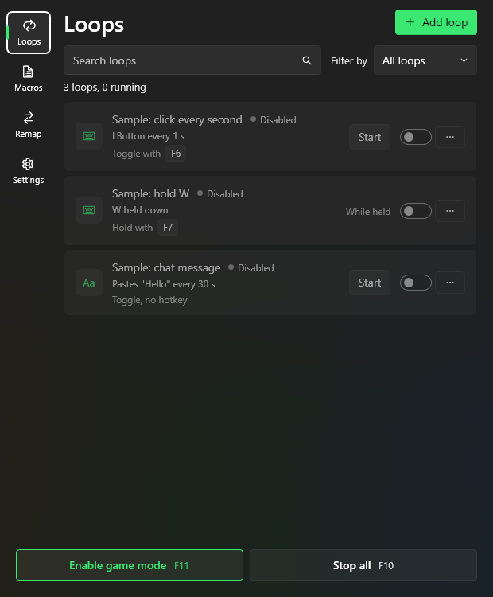

A good puppy for everything you repeat.
Loops, recorded macros and key remaps, with an in-game panel that never steals focus from your game.
Version {{VERSION}} · updates itself · installs without administrator rights · all releases
Everything you repeat, in one place
Loops
Press a key or mouse button every 10 ms to 24 h, keep it held down, or paste a text. Several rows, each on its own timer.
Macros
Record keys, clicks, scroll and mouse movement, then edit every step. Play once, N times or in a loop, at ×0.25 to ×4 speed.
Remap
A key or mouse button sends another key, button or combination, in all apps or only in the app you choose.
Game mode
A small always-on-top panel over your game. Click items to start or stop them without the game losing focus.
Hotkeys
Any key, mouse button or combination with Ctrl, Alt, Shift or Win. Toggle or Hold. Stop all, Game mode and Record are one key away.
Always up to date
PuppyMacro checks for new versions and updates itself with one click. Your loops, macros and remaps stay.
Install in a minute
- 1Download PuppyMacro-win-Setup.exe.
- 2Run it. If Windows shows “Windows protected your PC”, select More info, then Run anyway.
- 3Done. PuppyMacro starts and is in the Start menu. Setup installs the .NET 10 Desktop Runtime if it is missing.
Code signing policy
PuppyMacro releases are not code-signed yet, so Windows may warn before running Setup.
- Every release is built from the source code in the public repository by GitHub Actions.
- Author, reviewer and approver of releases: Giuseppe Vincenzi.
- Privacy: PuppyMacro does not collect or send any data. It connects only to GitHub, to check for and download updates.
- Uninstall from Windows Settings > Apps > Installed apps.